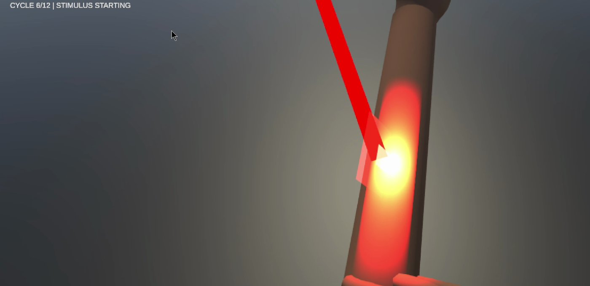
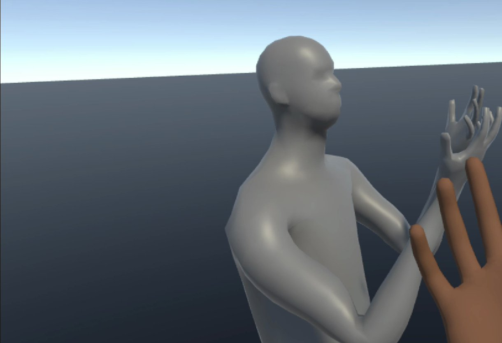

CMU • Augmented Perception Lab • Sep 2025 to Aug 2026
Multimodal XR Cues for Pain Perception
Can what you see and hear in VR change how much heat hurts? I built the XR side of a lab pain study: a virtual arm that lines up with your real one, visual and sound cues timed to a medical thermode, and pain ratings collected inside the headset. It started as a Fall 2025 independent study and ran through participant pilots in summer 2026.
When
Sep 2025 to Aug 2026
My role
Independent study, then graduate research assistant
Stack
Unity • Meta Quest • Medoc TSA 2 thermode
The question
XR can distract from pain, and it may also be able to change how pain feels. The open question is how. The study asks three things:
- Body-aligned visuals: do cues on the arm itself (glow, colour, motion) change pain ratings compared with plain VR?
- More senses: do sound and changes to the environment add to that effect, or work against it?
- Prediction: can simple models trained on the session data tell high pain from low pain, so cues could adapt?
How it unfolded
- Sep 2025 Independent study begins. First cues on the virtual arm: glow, colour and pulse, tested in different combinations.
- Oct to Dec 2025 Cues move onto the tracked hand and arm. Study protocol prepared with the lab in November, and the first pilot run in December.
- Jan to Feb 2026 Unity is wired to control the Medoc thermode directly, so heat and visuals run from one clock. Self-test sessions in February.
- Apr to May 2026 Project moved and backed up in April, then timing tests between the headset and the thermode in May.
- Jun 2026 Pilot sessions. One ran the wrong thermode program after a code mismatch and was rerun.
- Jul to Aug 2026 Data from the first participants, alongside the lab's EEG setup, including a four-block pilot that alternated cues off and on.
What I built
- A virtual arm that matches yours. Quest body tracking and inverse kinematics place the virtual forearm where the real one rests on the thermode, with elbow calibration and a choice of skin tones.
- A library of cues. Contact glow, a warm colour ramp, pulsing light, ripples, smoke, grill marks, and a laser beam that lands on the arm as the heat rises. Sound and ambient changes run through one environment controller.
- A bridge from Unity to the thermode. Unity selects, primes and triggers the Medoc TSA 2, so every heat pulse and every cue start together. Trials run as repeated pulses (45 °C from a 32 °C baseline, a 5 second hold, 30 seconds of rest, 12 cycles per block).
- A gallery for choosing cues. Ten to twelve cue presets sit on museum-style stands. A pinch flips to the next one and puts it on your arm, so we could feel each cue before deciding what to test.
- Ratings inside the headset. After each pulse a 0 to 10 pain scale appears in VR and is answered by hand, so people never take the headset off.
- A log of every moment. Pulse onset, when the rating appeared and was confirmed, trigger delay and the thermode's replies are all timestamped to CSV for analysis.


What the pilots taught
- Timing is the whole study. A cue only matters if it lands with the heat. Small drift between the thermode and the headset built up over the cycles until a participant noticed the mismatch, so I added drift compensation and tuned it between blocks. Pulse timing varies, so no single fixed offset is ever perfect, and timing has to be checked every cycle.
- A countdown changes the experiment. An on-screen timer let people anticipate each pulse, so it came out.
- Check the device before every run. One pilot ran the wrong thermode program because of a code mismatch: a reminder to confirm the program before every session.
Pilot ratings and participant data stay with the lab until they are published. The next step is the third question: whether session data can predict high and low pain well enough to adapt the cues.